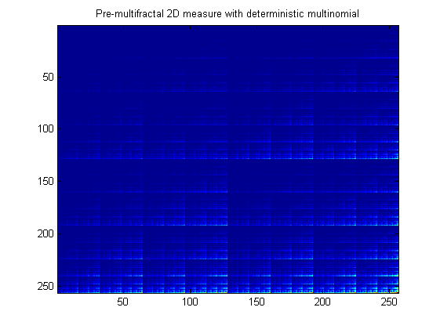

| FRACLAB Functions |
|
Generates a pre-multifractal deterministic 2D measure related to Multinomial Measure
MES = multinom2d(BASE,S,VP)
MES = multinom2d(BASE,S,VP) Generates the pre-multifractal deterministic 2D measure, MES, using a base of the multinomial, BASE, a number of scales, S and a vector VP containing the weight coefficients. The parameters BASE and S are positive integers not smaller than 2, BASE must be a (X,Y) vector and the elements in the parameter VP are reals in(0,1).
|
The matrix size, [N1,N2], of the generated signal is defined by the base value and the number of scales : [N1 N2] = (BASE(X)*BASE(Y)).^S |
B = [2,2]; S = 8;
x = multinom2d(B,S,[0.1 0.2;0.3 0.4]);
figure; imagesc(x);
title('Pre-multifractal 2D measure with deterministic multinomial');

[1] Carl J. G. Evertsz and Benoit B. MandelBrot, "Multifractal Measures", Chaos and Fractals, New Frontiers of Science, Appendix B,
Peitgen, Juergens and Saupe, Springer Verlag, Springer Verlag (1992) 921-953.
[2] Benoit B. MandelBrot, "A class of Multinomial Multifractal Measures with negative (latent) values for the 'Dimension' f(alpha)",
Fractals' Physical Origins and Properties, Proceeding of the Eric Meeting, 1988, L. Pietronero, Plenum Press, New York (1989) 3-29.
| |
multinom | multinomstoc | |